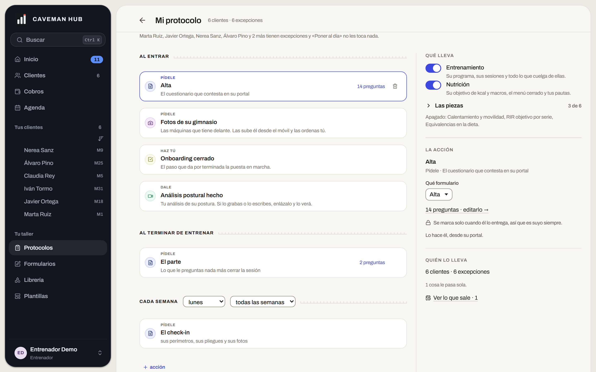
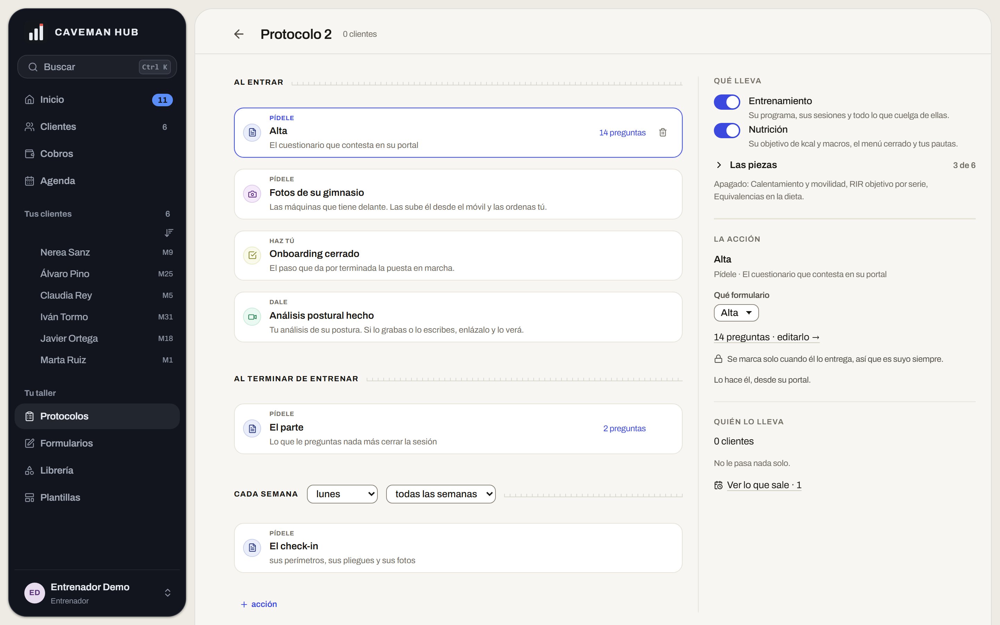
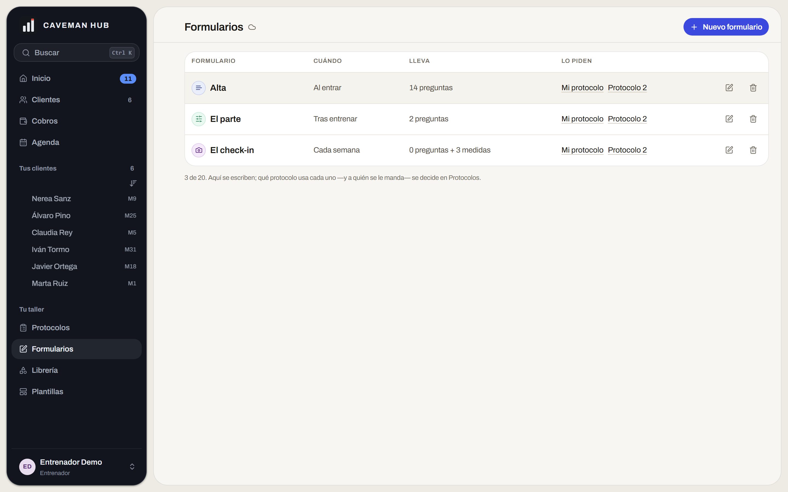

«El protocolo, como se hace ahora, lo veo un poco lío. Está bien meter los formularios dentro,
pero lo siento muy confuso, incómodo para un entrenador nuevo.»
El encargo, literal.
Sin construir Medido contra la app en local6 clientes · 2 protocolos
Diagnóstico
Cuatro cosas bajo un techo
El dibujo no es el problema: la rejilla respira y los verbos —pídele, dale, haz tú,
avísame— son de lo mejor escrito de la app. El problema es que la pantalla hace cuatro
trabajos y solo uno se llama protocolo.
Cuatro clases de cosa en una pantalla.
Cabecera
Mi protocolo · 6 clientes · 6 excepciones · Poner al día
Cartera
La columna del medio
Al entrar · pídele el alta
Al entrar · dale la guía de medida
Al terminar · pídele el parte
Cada semana · pídele el check-in
Panel · Qué lleva
Entrenamiento · Nutrición
Ficha del cliente
Panel · Las piezas
3 de 6 módulos
Tus ajustes
Panel · Quién lo lleva
Clientes, excepciones, la cola
Cartera
Qué es
Dónde vive hoy
¿Es el protocolo?
AlcanceQué le has vendido a esa persona
Panel · Qué lleva
NoEs la relación comercial
ComportamientoCómo se porta la app contigo
Panel · Las piezas
NoNi siquiera le llega al cliente
AccionesPídele, dale, avísame, y cuándo
La columna del medio
SíLa mejor parte de la pantalla
AdministraciónClientes, excepciones, poner al día
Cabecera y panel
NoEs la cartera
El problema no es lo que la pantalla hace. Es lo que además hace.
Averías · siete
Baratas, y ninguna discute el diseño
A la izquierda, lo que se lee hoy en la app. A la derecha, cómo debería leerse.
A-1
«Cada semana» y «todas las semanas», a tres píxeles
El rótulo de la premisa dice una cadencia (acciones.js:77) y el desplegable de
al lado dice otra. Con cadencia de dos, la línea se contradice sola. Y los dos desplegables
van sin etiqueta: hay que adivinar qué gobierna «lunes».
Ahora
Cada semanalunes cada 2 semanas
Se lee: cada semana · lunes · cada 2 semanas.
Propuesta
Cada semana
Le pides el check-in los lunes, cada 2 semanas.
Una frase, con las dos palabras editables dentro.
A-2
El panel repite la tarjeta
Con «Alta» elegida, el panel de la derecha calca la tarjeta de la izquierda. Lo único nuevo
es con qué formulario se cumple la acción. El panel no añade: repite, y quien llega da
por hecho que se le escapa una diferencia.
Ahora
Pídele
Alta
El cuestionario que contesta en su portal
14 preguntas
La acción
Alta
Pídele · el cuestionario que contesta en su portal
Qué formulario
Alta
14 preguntas
Tachado: lo que ya estaba tres centímetros a la izquierda.
Propuesta
Pídele
Alta
El cuestionario que contesta en su portal
14 preguntas
Se cumple con
Alta · 14 preguntas Editar las preguntas
El panel dice lo que la tarjeta no puede decir. Nada más.
A-3
«Las piezas» se cuenta por lo que está apagado
Un bloque plegado cuyo resumen es la lista de lo que no lleva: para saber qué lleva
hay que restar. El producto ya corrigió esto en otras pantallas.
Ahora
Las piezas 3 de 6
Apagado: calentamiento y movilidad, RIR objetivo por serie, equivalencias en la dieta.
Para saber qué lleva, réstalo tú.
Propuesta
Las piezas 3 puestas
Tu nota en cada sesión
Logbook del cliente
Parte al terminar de entrenar
Otras tres sin poner
Los seis módulos son los de protocol.js. Lo puesto primero, y el interruptor donde se lee.
A-4
«Lo que sale · 1» no es de este protocolo
Esa cifra cuenta los envíos pendientes de toda la cartera
(ProtocolosPanel.jsx:211) y se pinta dentro de «Quién lo lleva», debajo de
«0 clientes». Un protocolo sin nadie anuncia, en su propio panel, que hay algo a punto de
salir.
Ahora
Quién lo lleva
0 clientes
No le pasa nada solo.
Ver lo que sale · 1
Dos frases de este protocolo y una de la casa entera, en la misma caja.
Propuesta
TallerProtocolos Lo que sale · 1
Quién lo lleva
0 clientes
No le pasa nada solo.
La cifra de la casa sube a la cabecera de la casa.
A-5
La primera línea de la pantalla es un reproche
Antes de la primera acción: seis clientes, seis excepciones. Cuando todos son la
excepción, la excepción no informa, y encima ocupa el primer renglón escrito en negativo.
La proporción es de la demo; el sitio no depende de los datos.
Ahora
Marta Ruiz, Javier Ortega, Nerea Sanz, Álvaro Pino y 2 más tienen excepciones y «Poner al día» no les toca nada.
Al entrar
Pídele
Alta
El cuestionario que contesta en su portal
Propuesta
Al entrar
Pídele
Alta
El cuestionario que contesta en su portal
Quién lo lleva
6 clientes
6 lo llevan a su manera
El trabajo primero. La excepción baja al panel, en positivo y con su puerta.
A-6
Dos puertas para una sola partida
Al pie de Formularios hay una nota explicando qué mitad del trabajo le toca a esa pantalla.
Y editar el formulario de una acción navega a /formularios con un
state.volver escrito a propósito para que el entrenador no se pierda.
Cuando hay que programar el camino de vuelta, el viaje sobraba.
Ahora
Protocolos
Dice cuándo
editarlo piden
Formularios
Dice qué
Dos puertas que se pasan el trabajo la una a la otra.
Propuesta
Protocolos
Cuándo y qué, en el mismo sitio
Alta · 14 preguntas
Peso · Altura · Lesiones · Alergias · Días que entrena
pregunta
El mismo movimiento que juntó Ejercicios y Alimentos en la Librería.
A-7
Seis sustantivos antes de tocar nada
Protocolo, acción, premisa, enchufe, formulario, plantilla. Todos significan algo distinto y
el código los usa con precisión, pero son seis palabras nuevas entre abrir la puerta y
montar la primera cosa. La cura no es un párrafo que explique qué es un protocolo —la ley
de la voz lo prohíbe—: es que el protocolo vacío venga ya con sus cuatro momentos
dibujados.
Ahora
Protocolo 20 clientes
Una pantalla en blanco y seis palabras que no ha visto nunca.
Propuesta
Protocolo 20 clientes · 0 acciones
01 Al entrar acción
02 Al terminar de entrenar acción
03 Cada semana acción
04 Si pasa demasiado tiempo acción
La estructura enseña qué es. Sin una línea de definición.
Arreglos · tres
Tres formas, y no compiten
A + B es el rediseño. C es el colchón para quien llega.
A
El protocolo es solo la línea de tiempo
Sale de la pantalla todo lo que no ocurre en un momento. Queda una columna limpia: un
verbo y un sujeto por renglón.
Con un agravante: services ya es del cliente y no de la plantilla —está en
NOT_COMPARED_KEYS—, así que el interruptor del alcance está en la pantalla
equivocada por partida doble.
Cuesta: mover tres bloques y decidir dónde aterriza cada uno. Ninguno cambia de modelo: todos viven ya en clientProtocol.
Riesgo: el alcance es lo que más se toca al dar de alta. Si baja a la ficha, el alta tiene que seguir siendo un solo recorrido.
La mudanza
Qué llevaFicha del cliente
Las piezasTus ajustes
Quién lo llevaCabecera y cartera
Lo que queda
01 Al entrar
02 Al terminar de entrenar
03 Cada semana
04 Si pasa demasiado tiempo
B
Una sola puerta
Formularios deja de ser puerta. Un formulario se edita desde la acción que lo usa,
en capa, sin cambiar de pantalla. Es el movimiento que ya funcionó con Ejercicios y
Alimentos.
Cuesta: poco, y está medio hecho. ConstructorLibre es un componente completo; montarlo en una capa es cambiar quién lo renderiza. El state.volver desaparece en vez de crecer.
A decidir: si los formularios sueltos siguen necesitando lista propia. Probablemente sí, pero como tramo de «Lo que sale», no como puerta del taller.
Riesgo: con veinte formularios se pierde la vista de conjunto. Se compensa con la lista dentro de la capa.
Pídele
El check-in
Peso, perímetros, pliegues y fotos
lunes
El check-in · 5 preguntas
Peso
Perímetros
Pliegues
Fotos
pregunta
C
Un alta guiada, la primera vez
Tres preguntas en vez de una pantalla, y solo la primera vez. Después, la pantalla de
siempre: resuelve al que llega sin quitarle nada al que ya tiene quince protocolos
montados.
Cuesta: pantalla nueva, modelo ninguno. Las tres preguntas escriben claves que ya existen.
Riesgo: un asistente que se salta es un paso muerto. Tiene que poder cerrarse y no volver.
1 de 3
¿Qué le das?
Entrenamiento
Dieta
2 de 3
¿Qué le pides?
El alta al entrar, el check-in los lunes.
3 de 3
¿De qué te aviso?
Si no aparece en 7 días. Si se pesa fuera de rango.
Orden
Cada paso deja el terreno listo para el siguiente
01
Las siete averías
Baratas y sin discusión: la frase de la cadencia, el panel que repite, las piezas en positivo, la cifra global fuera del panel y la excepción donde no estorbe.
02
B · La puerta única
La que más lío quita por lo que cuesta.
03
A · La línea de tiempo
El rediseño de verdad. Mover bloques de sitio se decide mejor cuando la pantalla ya tiene su forma final.
04
C · El alta guiada
Al final: guiar hacia una pantalla que aún va a cambiar es escribir dos veces el mismo texto.
Intacto
Lo que no se toca
Los verbos y las premisas
Pídele, dale, haz tú, avísame, bajo «al entrar», «al terminar de entrenar», «cada semana». Se lee lo que le pasa a una persona, en orden. Todo lo demás debería organizarse alrededor.
Los formularios dentro del protocolo
El protocolo dice cuándo y el formulario dice qué. Separarlos fue el error: la idea es buena, se ejecutó con dos puertas.
Los discos de color por familia
Distinguen sin gritar y no gastan el acento, que sigue queriendo decir «esto se toca».
Evidencia
La app corriendo, no un recuerdo
Supabase local, npm run demo, seis clientes y dos protocolos.

El protocolo con clientes. Arriba del todo, la línea de excepciones (A-5). A la derecha, «Qué lleva», «Las piezas» (A-3), «La acción» (A-2) y «Ver lo que sale · 1» (A-4). Abajo, la cadencia que se contradice (A-1).

«Protocolo 2», recién duplicado y sin nadie: lo más parecido a lo que ve quien entra el primer día (A-7).

La otra puerta (A-6). Al pie: «Aquí se escriben; qué protocolo usa cada uno —y a quién se le manda— se decide en Protocolos».